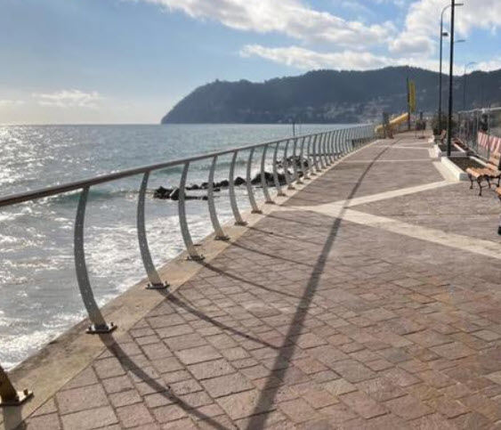

Laigueglia ist die niedliche kleine Schwester von Alassio und eignet sich ausgezeichnet als Ausflugsziel, falls das Wetter keinen ganzen Strandtag zulässt. Derselbe Weg wie auf der Promenade vor euren Hotels führt bis ins 2.2km weit entfernte Laigueglia (vom Hotel bis Anfang Dorf) und ist somit mit Inline Skates in ca. 20min erreicht. Dort findet man ein Mini-Alassio, welches sich ideal für einen Cappuccino Stopp eignet. Eine Stunde reicht gut, um den Kern des Dörfchens zu erkunden, womit ein Ausflug dorthin vor allem geeignet ist, um das Vorüberziehen von dicken Wolken abzuwarten (damit man danach entweder an den Strand oder zum Apero & Abendessen kann).
Promenade nach Laigueglia:
